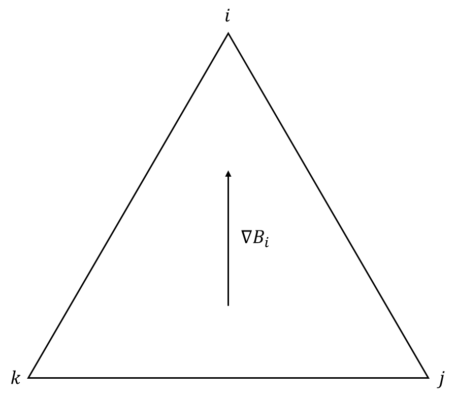
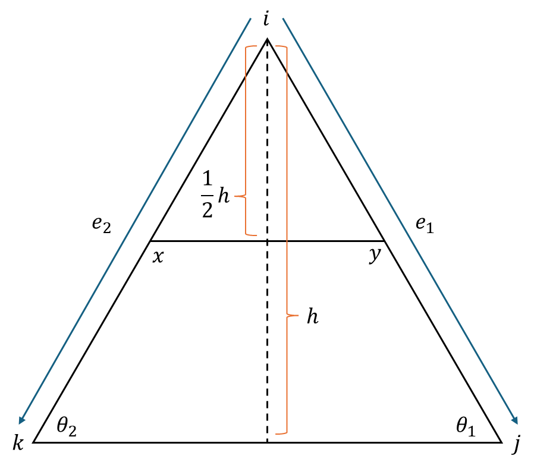

Hat Function
对一个有∣V∣个顶点的三角形mesh，定义∣V∣个对应的基函数，每个函数ϕv和一个顶点v对应。ϕv的值由下式定义：
ϕv(v)ϕv(w)ϕv(p):=1:=0,:=ϕv(i)Bi(p)+ϕv(j)Bj(p)+ϕv(k)Bk(p),w∈Vp∈triangle ijk,p∈/V
简而言之，ϕv在顶点v处为1，在其他顶点处为0，在非顶点处则按其所处三角形的重心坐标（barycentric coordinate）对三个顶点进行插值：
 （图片来自CS 15-458/858: Discrete Differential Geometry. Keenan Crane）
（图片来自CS 15-458/858: Discrete Differential Geometry. Keenan Crane）
我们可以用这些ϕv的加权和来近似其他的复杂函数u：
u^=v∑xvϕv
这就是“仅以顶点处的值构成的向量来表示整个函数”的几何解释。
Laplacian
给定triangle mesh M上的方程：
Δu=f
显然：
∀ triangle D∈M, ∀v∈V, ∫DΔuϕvdA=∫DfϕvdA
此时根据green’s first identity，有：
∫DΔuϕvdA=−∫D∇u⋅∇ϕvdA+∫∂Dϕv∇u⋅ndl
假设我们的mesh是无边界的，那么对∂D的每条边，都一定有另一个三角形的一条边与之重合，且法线相反。因此，当我们同时考虑mesh（⋃D）上所有的三角形时，上式右侧的第二项可以被抵消掉，只剩下：
∫⋃DΔuϕvdA=−∫⋃D∇u⋅∇ϕvdA=−D∑∫D∇u⋅∇ϕvdA
注意到u可以被近似表示为∑ixiϕi，于是：
∫⋃DΔuϕvdA=−D∑∫D∇(i∑xiϕi)⋅ϕvdA=−D∑i∑∫D∇ϕi⋅∇ϕvdA
注意到：
∫D∇ϕi⋅∇ϕvdA=⎩⎨⎧21(cot⟨ji,jk⟩+cot⟨ki,kj⟩),−21cot⟨ji,jv⟩,0,i=v,D=ijki=v,D=ijvotherwise
从而：
∫⋃DΔuϕvdA=21i∈N(v)∑(cot⟨ji,jv⟩+cot⟨ki,kv⟩)(xi−xv)
这就得到了著名的cotan公式。基于此，对每个顶点v，都有：
21i∈N(v)∑(cot⟨ji,jv⟩+cot⟨ki,kv⟩)(xi−xv)=∫⋃DfϕvdA
上式构成了关于向量[xi]的稀疏线性系统。注意我们对u和f的离散化方式并不相同，u被“分解”为一系列ϕ的加权和，f则是被“投影”到了这些ϕ上。这两种离散化都说得过去，如果想看看它们的关系，可以考虑将f也表示为：
f=i∑yiϕi
在与i相邻的某个三角形ijk中，容易证明：
∫DijkfϕidA=41(2yi+yj+yk)Aijk
可见上文中的“投影”比“分解”要更平滑一些。
Gradient

给定三角形ijk（i,j,k以顺时针方向给出）各顶点处的标量值ui,uj,uk，以重心坐标（barycentric coordinate）指定其内部每个点对应的u：
u(p)=Bi(p)ui+Bj(p)uj+Bk(p)uk
其中Bi(p)是点p重心坐标的i分量。此时：
∇u=ui∇Bi+uj∇Bj+uk∇Bk
接下来看看单独的∇Bi。显然∇Bi的方向是(pj−pk)⊥，⊥表示将向量pj−pk逆时针旋转90°，垂直于线段jk且朝向i。此外，Bi在jk上为0，在i处为1，故∇Bi的大小为1除以i到jk的距离——
∣∇Bi∣=2Aijk∣pj−pk∣
其中Aijk是三角形ijk的面积。
综合起来有：
∇u=ui∇(1−Bj−Bk)+uj∇Bj+uk∇Bk=(uj−ui)∇Bj+(uk−ui)∇Bk=(uj−ui)2Aijk(pk−pi)⊥+(uk−ui)2Aijk(pi−pj)⊥
Divergence
给定一个以三角形为单元的分段线性向量场X，且X的取值总是位于对应三角形所在的平面上（之前所讨论的梯度场就是一个绝佳的例子），来看看如何定义顶点处的散度。

考虑与顶点i直接相连的一圈三角形，记其中的一个为ijk，进行研究。设i到jk的距离为h，取平行于jk、与i相距h/2的线段xy作为ijk上的边界，则ijk对i的散度的贡献为：
∇ijk⋅X=∣px−py∣(Xijk⋅∣pk−pj∣(pk−pj)⊥)=21Xijk⋅(pk−pj)⊥
现记e1=pj−pi,e2=pk−pi，θ1为j处的内角，θ2为i处的内角，考虑方程：
αe1+βe2=(pk−pj)⊥
将它分解到jk和jk⊥这两个方向上：
α∣e1∣cosθ1α∣e1∣sinθ1+β∣e2∣sinθ2=β∣e2∣cosθ2=∣e1∣cosθ1+∣e2∣cosθ2
联立∣e1∣sinθ1=∣e2∣sinθ2，解得：
α=cotθ2 β=cotθ1
因此ijk对散度的贡献也可以写成：
∇ijk⋅X=21(e1cotθ2+e2cotθ1)⋅X
遍历与i相邻的所有三角形，将它们的上式值相加即可得到顶点i的散度。
这里我们遗留了一个问题——为什么积分的边界被取作与i相距h/2的线段xy？这其实不是很有道理，因为和连续情形下的散度对不上。但如果从“laplace=div grad”的角度出发，则可以给出一个解释。对包含顶点i的一圈区域D使用Stokes公式：
∫∂DX⋅ndl=∫D∇⋅XdA
现假设X是某个标量函数u的梯度∇u，则上式右侧是Δu在D上的积分。此时，考虑上式在三角形ijk中的部分：
∫∂DX⋅ndl=∫∂D((uj−ui)2Aijk(pk−pi)⊥+(uk−ui)2Aijk(pi−pj)⊥)⋅ndl
此时，如果把∂D取成三角形的中线，那么：
∫∂DX⋅ndl=4Aijk1((uj−ui)(pk−pi)⊥⋅(pk−pj)⊥+(uk−ui)(pi−pj)⊥⋅(pk−pj)⊥)=4Aijk1((uj−ui)kikjcos⟨ki,kj⟩+(uk−ui)ijkjcos⟨ji,jk⟩)=4Aijk1((uj−ui)2Aijkcot⟨ki,kj⟩+(uk−ui)2Aijkcot⟨ji,jk⟩)=21((uj−ui)cot⟨ki,kj⟩+(uk−ui)cot⟨ji,jk⟩)
由此可见，把∂D取成包含i的一圈三角形的中线，就能使得“laplace=div grad”成立。由此可见，我们是在人为地构造梯度和cotan laplacian之间的桥梁，并把设计的结果称之为triangle mesh上的散度。